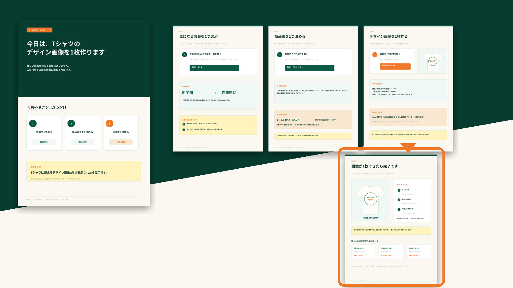

- 3ステップの全体像60分の目安と、画像1枚ができたときの完成地点を確認します。
- 言葉の選び方一覧から気になる言葉を1つ選び、迷ったら実例をそのまま使えます。
- 商品案GPTのコピペ文何を入力するかを考えず、掲載文を貼って3案を出します。
AI商品づくり無料スターターキット
最初の1商品案と、販売に使うデザイン画像を約60分で形にする
今日やることは3つだけです。受け取りPDFを上から順番に進め、「言葉を1つ選ぶ → 商品案を1つ決める → デザイン画像を1枚作る」を実例どおりに進めます。

WHAT YOU RECEIVE
受け取りPDFに
入っているもの。
見本とコピペ文を使い、上から順番に進める5ページの初心者向けガイドです。
- 画像づくりGPTの入力例商品、入れる文字、希望する見せ方をそのまま貼れます。
- 完成例と保存リスト画像が1枚できたら、保存する3つの項目を確認します。
- 困ったときの追加ツール言葉の絞り込みや出品前チェックは、必要なときだけ開きます。
約60分は目安です。画像の作り直しや言葉選びに時間がかかる場合があります。1回で完璧にせず、まず1枚を保存することを優先します。
HOW TO USE
PDFを開いたら、
3つだけ進める。
同じ実例を使い、言葉選びからデザイン画像1枚まで一続きで進めます。
01
言葉を1つ選ぶ一覧から気になる言葉を1つ選ぶ。迷ったら掲載例を使う
02
商品案を1つ決めるコピペ文をGPTへ送り、3案から分かりやすい1案を残す
03
デザイン画像を1枚作る商品案と短い文字を画像づくりGPTへ貼り、画像を保存する
STARTER COMPLETE
画像が1枚できたら、無料スターターキットは完了です。
選んだ言葉、商品案、販売に使うデザイン画像が手元に残りました。次は、その画像をPrintifyなどの商品へ登録し、Etsyの商品ページを作って公開する工程です。
NEXT STEP
画像を、公開できる商品へ。
ここから先はスターターキットには含まれません。完成画像をPrintifyの商品へ登録し、Etsyの商品ページを公開する工程です。
01
販売先と商品を選ぶEtsyとPrintifyを準備し、Tシャツなど最初の商品を決める
02
商品・色・サイズを決める印刷会社、ブランク、販売色、サイズ範囲を確認する
03
画像を配置するデザインをアップロードし、印刷位置と大きさを調整する
04
販売情報を整えるモックアップ、タイトル、説明文、タグ、価格を入力する
05
送料・権利・表示を確認する配送プロフィール、手数料、赤字、商標、商品表示を確認する
06
公開して実際の表示を見るEtsyで公開し、スマホとパソコンの見え方を確認する
公開準備は一度で終わらない場合があります。Etsyの本人確認やPayoneer設定には日数がかかることがあります。先にアカウント準備を進めると、公開直前で止まりにくくなります。
CHOOSE YOUR WAY
ここからは、自分に合う進め方を選べます
教材を全部買う必要はありません。画像完成後は、自習と伴走のどちらからでも商品公開へ進めます。
SELF STUDY
自分のペースで公開まで進める
動画で操作を確認したい場合はUdemy、詳しい手順書を使って運営まで進めたい場合はBrain。
- Udemy：動画を見ながら最初の1商品を公開
- Brain：詳しい手順書と道具で運営まで進める
3 MONTH SUPPORT
相談しながら、商品公開まで進める
一人では判断が止まりやすい人向けに、商品選び・出品準備・改善を3か月間一緒に進めます。
3か月 69,800円（税込）
3か月伴走の内容を見る教材を全部買う必要はありません。
すぐに申し込むのが不安な方は、まず90分相談で状況を整理できます。
90分相談を見るFAQ
受け取る前の確認。
無料範囲と必要な環境を先に確認できます。
本当に無料ですか？
AI商品づくり無料スターターキットの受け取りに料金はかかりません。Etsyの開設・出品、外部サービスの有料プランなどは別途費用が発生する場合があります。
PDFだけでEtsyへ公開できますか？
PDFの到達点は商品案とデザイン画像です。出品工程は含まれません。画面操作まで順番に進めたい場合はUdemy、運営まで続けたい場合はBrainが向いています。
ChatGPTの有料版は必要ですか？
無料枠でも進められますが、利用上限や画像生成の仕様は変わることがあります。作り直しが多い場合は有料プランの方が進めやすいことがあります。
売れる商品案を教えてもらえますか？
売上は保証できません。GPTで3案を出し、初心者でも作りやすい1案を選ぶ流れです。画像ができたら公開へ進み、実際の反応を確認します。